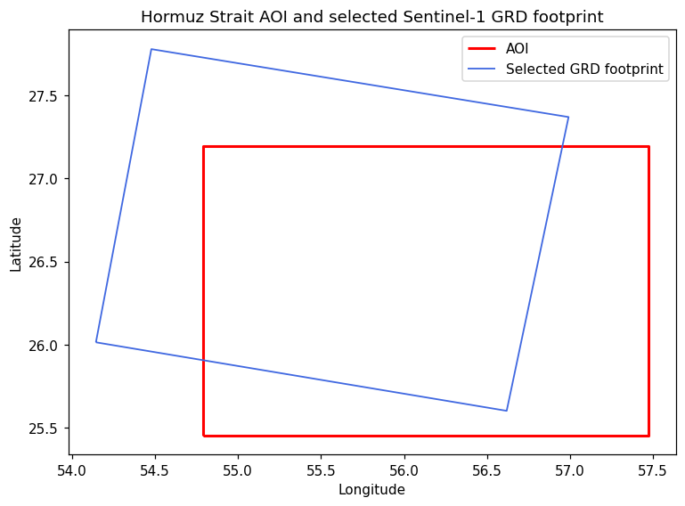
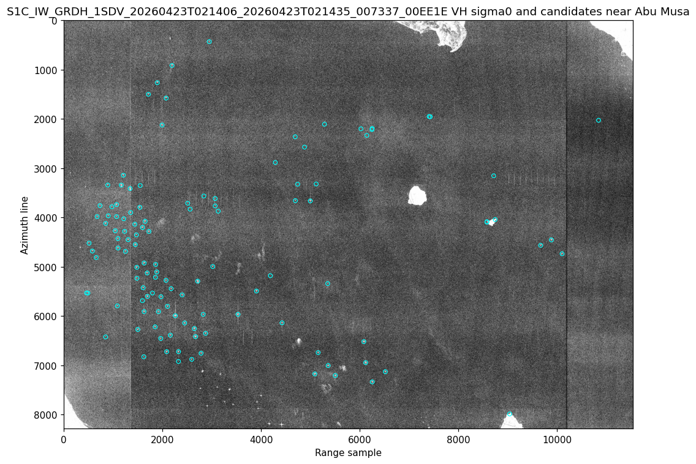

Ship Detection in the Strait of Hormuz with Sentinel-1
This capstone demonstrates two complementary GeoLattice workflows over the Hormuz Strait AOI: CFAR ship candidates from Sentinel-1 IW GRDH VV/VH imagery and, when matching local IW SLC data are available, range sub-look coherence at those candidates. The AOI and catalog records are stored in this notebook’s Data/08_remote_sensing/08_11_Capstones/hormuz_strait_sentinel1 directory.
Overview
The Strait of Hormuz is a narrow, globally important maritime chokepoint linking the Persian Gulf with the Gulf of Oman. It carries energy as well as food and fertilizer trade, so disruption can affect supply chains well beyond the region. The World Trade Organization’s Strait of Hormuz portal documents trade impacts and measures connected with the 2026 Strait situation; its reporting includes measures introduced on or after February 28, 2026. Monitoring vessel presence after April 20 therefore provides useful situational context for observing traffic patterns during this wider period of disruption. The International Maritime Organization reported on 21 April that about 20,000 mariners and 2,000 ships were stranded in the Persian Gulf due to the closure.
Satellite ship-candidate detection can help analysts compare where vessels are visible across selected acquisition dates, identify areas for closer review, and complement maritime reports. Sentinel-1 SAR is useful because it can collect imagery at night and through cloud cover, but each image is only a snapshot, not continuous tracking. This notebook’s April 23, 2026 acquisition is an example observation after April 20—not evidence that a specific incident occurred on that date. GRD detections are unverified radar candidates: they do not establish vessel identity, intent, threat, or route, and should be corroborated with AIS, trusted maritime notices such as UKMTO, and independent image review.
Scope and interpretation
The GRD search uses the requested 20–30 April 2026 interval and Planetary Computer’s sentinel-1-grd collection. The catalog supplies georeferenced VV and VH measurement COGs plus calibration/noise XML assets; GeoLattice reads and calibrates only the AOI window. The notebook ranks matching acquisitions by their footprint overlap with the AOI and processes the best-overlapping IW dual-pol scene. A single granule may cover only part of this large AOI, so its coverage is reported and should not be mistaken for complete Strait coverage.
GRDH detections are bright point-like candidates relative to local sea clutter, not a vessel identification product. Coastlines, ports, islands, wakes, sidelobes, and azimuth ambiguities can all create false detections. No pre-CFAR speckle filter is applied because spatial filtering can smear small targets. Sub-look coherence is computed from complex SLC data and is a separate confirmation feature; GRD intensity cannot be used to calculate it. Planetary Computer does not publish an IW SLC collection, so the optional SLC section looks for matching SAFE products already present locally and explains when they are unavailable.
Installation. This notebook needs installation option 5 (core, spatial analysis, spatial statistics, geostatistics and remote sensing): pip install "geolattice[remote-sensing]". See “Installation options” in the GeoLattice README.
Code
import jsonimport reimport urllib.requestfrom pathlib import Pathimport geopandas as gpdimport matplotlib.pyplot as pltimport numpy as npimport rasteriofrom rasterio.features import geometry_maskfrom rasterio.transform import from_gcpsfrom shapely.geometry import box, shapefrom geolattice.rsense.sar import sentinel1, shipplt.rcParams.update({"figure.dpi": 110})DATA_DIR = Path("../../../../Data/08_remote_sensing/08_11_Capstones/hormuz_strait_sentinel1")ifnot DATA_DIR.is_dir(): DATA_DIR = Path("Data/08_remote_sensing/08_11_Capstones/hormuz_strait_sentinel1")AOI_PATH = DATA_DIR /"AOI_hormuz_strait.geojson"ifnot AOI_PATH.is_file():raiseFileNotFoundError(f"Hormuz Strait AOI not found: {AOI_PATH.resolve()}")aoi = gpd.read_file(AOI_PATH)if aoi.empty:raiseValueError(f"AOI has no features: {AOI_PATH}")if aoi.crs isNone: aoi = aoi.set_crs("EPSG:4326")aoi = aoi.to_crs("EPSG:4326")aoi_geometry = aoi.geometry.union_all()WEST, SOUTH, EAST, NORTH = aoi.total_boundsBOUNDS = (WEST, SOUTH, EAST, NORTH)# A bounded representative ship-lane window keeps full-resolution CFAR practical.PROCESSING_BOUNDS = (56.15, 26.35, 56.65, 26.75)processing_geometry = box(*PROCESSING_BOUNDS)ifnot aoi_geometry.covers(processing_geometry):raiseValueError("PROCESSING_BOUNDS must lie inside the Hormuz Strait AOI")print(f"GeoLattice Sentinel-1 ship workflow | AOI: {AOI_PATH}")print(f"AOI bounds (west, south, east, north): {BOUNDS}")print(f"Full-resolution processing bounds: {PROCESSING_BOUNDS}")print(f"Local SAFE products: {len(list(DATA_DIR.rglob('*.SAFE')))}; "f"IW SLC products: {sum('_SLC__'in p.name for p in DATA_DIR.rglob('*.SAFE'))}")
The AOI GeoJSON stores coordinates in the required GeoJSON order, longitude then latitude. The STAC search filters to IW scenes with both VV and VH polarization. If matching local SLC SAFE products are present, the notebook first considers GRD scenes from the same platform and acquisition date so sub-look coherence can be demonstrated; it then selects the candidate with the largest projected AOI overlap. Otherwise, it selects the best-overlapping GRD scene. Full-resolution detection is bounded to PROCESSING_BOUNDS, a representative 0.5° by 0.4° ship-lane window inside the larger AOI, to control memory and run time. Change these bounds to investigate another part of the AOI. Repeat the processing for additional scene footprints to cover more area or build a date series.
Code
STAC_URL ="https://planetarycomputer.microsoft.com/api/stac/v1/search"SEARCH = {"collections": ["sentinel-1-grd"],"intersects": aoi_geometry.__geo_interface__,"datetime": "2026-04-20T00:00:00Z/2026-04-30T23:59:59Z","limit": 100,}request = urllib.request.Request( STAC_URL, data=json.dumps(SEARCH).encode("utf-8"), headers={"Content-Type": "application/json", "Accept": "application/geo+json"}, method="POST",)with urllib.request.urlopen(request, timeout=60) as response: search_result = json.load(response)items = [ item for item in search_result.get("features", [])if item.get("properties", {}).get("sar:instrument_mode") =="IW"andset(item.get("properties", {}).get("sar:polarizations", [])) == {"VV", "VH"}and"GRDH_1SDV"in item.get("id", "")]ifnot items:raiseRuntimeError("Planetary Computer returned no IW GRDH 1SDV scenes for the AOI/date interval")# Prefer acquisitions that can be paired with a local SLC; otherwise use any catalog match.local_slc_keys =set()for safe in DATA_DIR.rglob("*.SAFE"):if"_SLC__"notin safe.name:continue match = re.search(r"_(20\d{6})T", safe.name)if match: local_slc_keys.add((safe.name[:3], match.group(1)))paired_items = [ item for item in itemsif (item["id"][:3], item["properties"]["datetime"][:10].replace("-", "")) in local_slc_keys]candidate_items = paired_items if paired_items else itemsprint(f"Scenes with a same-platform/date local SLC: {len(paired_items)}")# Rank by overlap area in a local projected CRS rather than by degree-squared area.aoi_projected = aoi.to_crs("EPSG:32640")aoi_area =float(aoi_projected.geometry.area.sum())ranked_items = []for item in candidate_items: footprint = gpd.GeoSeries([shape(item["geometry"])], crs="EPSG:4326").to_crs(aoi_projected.crs).iloc[0] overlap_area =float(footprint.intersection(aoi_projected.geometry.union_all()).area) ranked_items.append((overlap_area, item))ranked_items.sort(key=lambda pair: pair[0], reverse=True)overlap_area, selected_item = ranked_items[0]coverage_fraction = overlap_area / aoi_areaselected_footprint = shape(selected_item["geometry"])ifnot selected_footprint.intersects(processing_geometry):raiseValueError("Selected scene does not cover PROCESSING_BOUNDS; select another matching acquisition")print(f"Matching IW GRDH 1SDV scenes: {len(items)}")print(f"Selected: {selected_item['id']}")print(f"Acquisition: {selected_item['properties']['datetime']}")print(f"Platform / relative orbit: {selected_item['properties'].get('platform')} / "f"{selected_item['properties'].get('sat:relative_orbit')}")print(f"AOI area covered by this scene: {coverage_fraction:.1%}")# Keep an unsigned catalog record for provenance; never save the temporary access token.record_path = DATA_DIR /"selected_grd_stac_item.json"record_path.write_text(json.dumps(selected_item, indent=2) +"\n", encoding="utf-8")footprint_gdf = gpd.GeoDataFrame( {"scene": [selected_item["id"]]}, geometry=[shape(selected_item["geometry"])], crs="EPSG:4326",)fig, ax = plt.subplots(figsize=(8, 7))aoi.boundary.plot(ax=ax, color="red", linewidth=2, label="AOI")footprint_gdf.boundary.plot(ax=ax, color="royalblue", linewidth=1.2, label="Selected GRD footprint")ax.set(title="Hormuz Strait AOI and selected Sentinel-1 GRD footprint", xlabel="Longitude", ylabel="Latitude")ax.legend()ax.set_aspect("equal")plt.show()
Scenes with a same-platform/date local SLC: 4
Matching IW GRDH 1SDV scenes: 19
Selected: S1C_IW_GRDH_1SDV_20260423T021406_20260423T021435_007337_00EE1E
Acquisition: 2026-04-23T02:14:20.666965Z
Platform / relative orbit: sentinel-1c / 166
AOI area covered by this scene: 62.1%

Read calibrated VV/VH over the AOI
Planetary Computer’s Sentinel-1 GRD assets are cloud-optimized GeoTIFFs with ground control points. GeoLattice read_grd_subset uses these geolocation points together with the scene’s calibration and noise XMLs to return linear sigma0 in the AOI window. Border-noise removal is limited to actual full-scene edges, not the artificial edges of the AOI crop. COG data are read remotely by window, so the full multi-hundred-megabyte measurement assets do not need to be downloaded first. A matching local COG, if present, is preferred; its calibration/noise metadata are still retrieved from the selected STAC item.
Code
from geolattice.rsense.core.io import read_safelocal_grd_safes =sorted( safe for safe in DATA_DIR.rglob("*.SAFE")if"_GRDH_1SDV_"in safe.name and safe.name.startswith(selected_item["id"]))if local_grd_safes: safe_index = read_safe(local_grd_safes[0]) vv_source, vh_source = safe_index["measurement"]["vv"], safe_index["measurement"]["vh"] vv_cal, vh_cal = safe_index["calibration"]["vv"], safe_index["calibration"]["vh"] vv_noise, vh_noise = safe_index["noise"]["vv"], safe_index["noise"]["vh"]print(f"Using local GRD SAFE: {local_grd_safes[0].name}")else: token_url ="https://planetarycomputer.microsoft.com/api/sas/v1/token/sentinel-1-grd"with urllib.request.urlopen(token_url, timeout=30) as response: sas_token = json.load(response)["token"].lstrip("?")def signed_asset(key): href = selected_item["assets"][key]["href"]return href + ("&"if"?"in href else"?") + sas_token vv_source, vh_source = signed_asset("vv"), signed_asset("vh") vv_cal, vh_cal = signed_asset("schema-calibration-vv"), signed_asset("schema-calibration-vh") vv_noise, vh_noise = signed_asset("schema-noise-vv"), signed_asset("schema-noise-vh")vv_result = sentinel1.read_grd_subset( vv_source, vv_cal, vv_noise, bounds=PROCESSING_BOUNDS, border_noise=True,)vh_result = sentinel1.read_grd_subset( vh_source, vh_cal, vh_noise, bounds=PROCESSING_BOUNDS, border_noise=True,)if vv_result["data"].shape != vh_result["data"].shape:raiseValueError("VV and VH AOI windows differ; check that both assets belong to the same GRD item")vv = vv_result["data"]vh = vh_result["data"]gcps = vh_result["gcps"]print(f"Calibrated AOI window: {vh.shape[0]:,} lines x {vh.shape[1]:,} samples")print(f"Window in source scene: {vh_result['window']}")print(f"Finite sigma0 pixels: VV={np.isfinite(vv).mean():.1%}, VH={np.isfinite(vh).mean():.1%}")print("Sigma0 is in linear power; convert to dB only for display and contrast summaries.")
Using local GRD SAFE: S1C_IW_GRDH_1SDV_20260423T021406_20260423T021435_007337_00EE1E_C17A.SAFE
Calibrated AOI window: 5,284 lines x 5,772 samples
Window in source scene: (7234, 1266, 5284, 5772)
Finite sigma0 pixels: VV=100.0%, VH=100.0%
Sigma0 is in linear power; convert to dB only for display and contrast summaries.
Mask land and build a sea-clutter field
A land/coastal exclusion mask prevents shoreline clutter from dominating CFAR. This cell caches Natural Earth’s 1:10m land polygons in the AOI data folder, clips them to the AOI, and applies GeoLattice’s configurable coastal buffer. Natural Earth is suitable for a regional demonstration but may omit small islands, port structures, and newly built features; inspect and improve the mask for operational use.
Code
LAND_PATH = DATA_DIR /"ne_10m_land.geojson"LAND_URL ="https://raw.githubusercontent.com/nvkelso/natural-earth-vector/master/geojson/ne_10m_land.geojson"ifnot LAND_PATH.exists(): urllib.request.urlretrieve(LAND_URL, LAND_PATH)land = gpd.read_file(LAND_PATH).to_crs("EPSG:4326")land_geoms = [ geom.intersection(processing_geometry)for geom in land.geometryif geom isnotNoneand geom.intersects(processing_geometry)]window_transform = from_gcps(gcps)inside_aoi = geometry_mask( [processing_geometry], out_shape=vh.shape, transform=window_transform, invert=True)land_mask = ship.land_mask_for_window( gcps, vh.shape, land_geoms, buffer_m=300.0, pixel_spacing=10.0,)sea = inside_aoi &~land_mask & np.isfinite(vv) & np.isfinite(vh) & (vh >0)ifnot sea.any():raiseValueError("No valid sea pixels remain; inspect AOI overlap and coastline masking")print(f"AOI sea pixels retained: {sea.sum():,} ({sea.mean():.1%} of the read window)")print("Land mask includes a 300 m shoreline buffer to suppress coast and harbor clutter.")
AOI sea pixels retained: 21,557,730 (70.7% of the read window)
Land mask includes a 300 m shoreline buffer to suppress coast and harbor clutter.
Detect GRD ship candidates with GeoLattice CFAR
GeoLattice ship.cfar_tiled evaluates a local background ring in unfiltered VH sigma0. This workflow estimates ENL from the most homogeneous valid sea blocks instead of assuming one nominal value for the whole scene. It also uses a more conservative pixel false-alarm threshold, requires adequate background support, and filters components by mean-power contrast (less sensitive to a single bright speckle pixel than peak contrast). These are screening candidates, not confirmed ships: GRD speckle, sea state, sidelobes, and bright structures can still cause false alarms, while conservative thresholds can miss small or low-contrast vessels. Lower MIN_MEAN_CONTRAST_DB to increase sensitivity after visual review.
The GRD catalog item supplies measurement, calibration, and noise assets, but not the original IW annotation needed by GeoLattice to read the pulse repetition frequency and build the incidence-angle grid for azimuth-ambiguity tests. Therefore this remote-COG path does not automatically label ambiguity ghosts. If the matching original GRD SAFE is available locally, use ship.detect_ships_grd (or ship.read_prf, sentinel1.incidence_angle_grid, and ship.flag_azimuth_ambiguities) to add that quality-control step. Candidate tables should be reviewed against imagery and, where possible, independent vessel reports.
Optional IW SLC range sub-look coherence
Range sub-looks split an IW SLC’s processed range spectrum into lower- and upper-frequency images; GeoLattice calculates their local coherence with ship.sublook_coherence. Ships often retain higher coherence between sub-looks than sea clutter. Use an SLC from the same platform, pass, relative orbit, and acquisition as the GRD candidates where possible. This is not coherence between two dates or a replacement for interferometric coherence.
Planetary Computer publishes GRD and RTC collections, not SLC. Place an authorized, matching IW SLC SAFE product in Data/08_remote_sensing/08_11_Capstones/hormuz_strait_sentinel1 to run the optional cell below. The processing is limited to IW1 and bursts whose range window intersects the AOI; select IW2/IW3 as appropriate for other swath coverage.
Code
SLC_SWATH ="IW1"slc_safes =sorted(DATA_DIR.rglob("*.SAFE"))slc_matches = [ safe for safe in slc_safesif"_SLC__"in safe.name and safe.name[:3] == selected_item["id"][:3]and selected_item["properties"]["datetime"][:10].replace("-", "") in safe.name]ifnot slc_matches:print("No same-platform, same-date IW SLC SAFE found locally.")print("Planetary Computer's Sentinel-1 collection does not provide SLC; range sub-look coherence was not computed.")print("Add a matching authorized SAFE with annotation/ and measurement/ folders, then rerun this cell.")else:import pandas as pd slc_safe = slc_matches[0] annotation_path =next(iter(sorted(slc_safe.glob(f"annotation/*-{SLC_SWATH.lower()}-slc-vv-*.xml"))), None) measurement_path =next(iter(sorted(slc_safe.glob(f"measurement/*-{SLC_SWATH.lower()}-slc-vv-*.tiff"))), None)if annotation_path isNoneor measurement_path isNone:raiseFileNotFoundError(f"Could not find {SLC_SWATH} VV annotation and measurement in {slc_safe}") ann = sentinel1.read_slc_annotation(annotation_path) processing_params = ship.read_processing_params(annotation_path)if targets.empty:print("No GRD candidates are available to sample for SLC sub-look coherence.")else:# Process a small neighborhood around the strongest GRD candidate to bound SLC memory. target_index = targets["mean_contrast_db"].idxmax() if"mean_contrast_db"in targets else targets.index[0] target = targets.loc[target_index] delta_lon =0.015 delta_lat =0.015 target_bounds = (max(PROCESSING_BOUNDS[0], float(target.lon) - delta_lon),max(PROCESSING_BOUNDS[1], float(target.lat) - delta_lat),min(PROCESSING_BOUNDS[2], float(target.lon) + delta_lon),min(PROCESSING_BOUNDS[3], float(target.lat) + delta_lat), ) burst_ids, burst_cols = [], []for burst_id inrange(len(ann["bursts"])): cols = sentinel1.burst_window(ann, burst_id, target_bounds, margin=200)if cols[1] - cols[0] >=64: burst_ids.append(burst_id) burst_cols.append(cols)ifnot burst_ids:raiseValueError(f"No {SLC_SWATH} SLC bursts cover the strongest GRD candidate") common_cols = (min(c[0] for c in burst_cols), max(c[1] for c in burst_cols)) coherence_layers = []for burst_id in burst_ids: burst = sentinel1.read_slc_burst(measurement_path, ann, burst_id, cols=common_cols) lower, upper = ship.range_sublooks(burst, processing_params, ann["range_sampling_rate"]) valid_burst = np.isfinite(burst) & (np.abs(burst) >0) coherence, _ = ship.sublook_coherence(lower, upper, window=(3, 9), valid=valid_burst) coherence_layers.append(coherence) candidate_coherence = ship.coherence_at_points( [target.lat], [target.lon], ann, burst_ids, common_cols, coherence_layers, sea_height=0.0 )[0] targets.loc[target_index, "slc_range_sublook_coherence"] = candidate_coherence targets.to_csv(target_path, index=False)print(f"Strongest candidate index: {target_index} | sub-look coherence: {candidate_coherence:.3f}")print(f"Processed {len(burst_ids)}{SLC_SWATH} burst(s) around a bounded candidate window.")print(f"Updated candidate table: {target_path}")print(f"SLC source: {slc_safe.name} | swath: {SLC_SWATH}")
This interactive Leafmap view overlays the AOI, the full-resolution processing window, and the screened GRD candidate locations on Esri World Imagery. Click a marker to inspect its backscatter, contrast, size, and optional SLC coherence. Satellite tiles require an internet connection. These points are candidate detections, not confirmed vessel identities.
This second run uses the user-provided southwest and northeast coordinates (SW 26.483593, 54.904882; NE 25.877560, 55.953254), normalized to (west, south, east, north) order. It reuses the selected Sentinel-1 acquisition and the same calibration, shoreline mask, adaptive ENL estimate, and CFAR thresholds, then saves a separate candidate table and maps the results on satellite imagery. The selected scene intersects this region; its footprint covers approximately 99.96% of the requested rectangle, so check the footprint and image edges when interpreting detections.
Code
ABUMUSA_BOUNDS = (54.904882, 25.877560, 55.953254, 26.483593)abumusa_geometry = box(*ABUMUSA_BOUNDS)ifnot aoi_geometry.covers(abumusa_geometry):raiseValueError("The Abu Musa analysis bounds must lie inside the Hormuz Strait AOI")ifnot selected_footprint.intersects(abumusa_geometry):raiseValueError("The selected GRD scene does not intersect the Abu Musa analysis bounds")vv_abumusa_result = sentinel1.read_grd_subset( vv_source, vv_cal, vv_noise, bounds=ABUMUSA_BOUNDS, border_noise=True)vh_abumusa_result = sentinel1.read_grd_subset( vh_source, vh_cal, vh_noise, bounds=ABUMUSA_BOUNDS, border_noise=True)if vv_abumusa_result["data"].shape != vh_abumusa_result["data"].shape:raiseValueError("VV and VH Abu Musa windows differ; check that assets belong to the same GRD item")vv_abumusa = vv_abumusa_result["data"]vh_abumusa = vh_abumusa_result["data"]gcps_abumusa = vh_abumusa_result["gcps"]land_geoms_abumusa = [ geom.intersection(abumusa_geometry)for geom in land.geometryif geom isnotNoneand geom.intersects(abumusa_geometry)]inside_abumusa = geometry_mask( [abumusa_geometry], out_shape=vh_abumusa.shape, transform=from_gcps(gcps_abumusa), invert=True,)land_mask_abumusa = ship.land_mask_for_window( gcps_abumusa, vh_abumusa.shape, land_geoms_abumusa, buffer_m=300.0, pixel_spacing=10.0,)sea_abumusa = ( inside_abumusa &~land_mask_abumusa& np.isfinite(vv_abumusa) & np.isfinite(vh_abumusa) & (vh_abumusa >0))ifnot sea_abumusa.any():raiseValueError("No valid sea pixels remain in the Abu Musa analysis window")enl_abumusa = ship.estimate_enl(vh_abumusa, sea_abumusa, block=64, max_cv_quantile=0.2)detections_abumusa, background_db_abumusa = ship.cfar_tiled( np.nan_to_num(vh_abumusa, nan=0.0, posinf=0.0, neginf=0.0), sea_abumusa, tile=1024, method="gamma", pfa=PFA, enl=enl_abumusa, outer=OUTER_PIXELS, guard=GUARD_PIXELS, min_ring_fraction=0.7,)targets_abumusa = ship.extract_targets( detections_abumusa, np.nan_to_num(vh_abumusa, nan=0.0, posinf=0.0, neginf=0.0), np.nan_to_num(vv_abumusa, nan=0.0, posinf=0.0, neginf=0.0), gcps=gcps_abumusa, background_db=background_db_abumusa, pixel_spacing=10.0, min_px=3, max_px=500, min_mean_contrast_db=MIN_MEAN_CONTRAST_DB,)targets_abumusa = targets_abumusa.sort_values("mean_contrast_db", ascending=False).reset_index(drop=True)print(f"Abu Musa bounds (west, south, east, north): {ABUMUSA_BOUNDS}")print(f"Calibrated window: {vh_abumusa.shape[0]:,} x {vh_abumusa.shape[1]:,} pixels")print(f"Valid sea pixels: {sea_abumusa.sum():,} | estimated ENL: {enl_abumusa:.3f}")print(f"CFAR-positive pixels: {detections_abumusa.sum():,}")print(f"Candidates with mean contrast >= {MIN_MEAN_CONTRAST_DB:g} dB: {len(targets_abumusa):,}")targets_abumusa.head(20)
Abu Musa bounds (west, south, east, north): (54.904882, 25.87756, 55.953254, 26.483593)
Calibrated window: 8,287 x 11,535 pixels
Valid sea pixels: 69,039,381 | estimated ENL: 0.391
CFAR-positive pixels: 16,160
Candidates with mean contrast >= 12 dB: 118
row
col
n_px
vh_peak_db
vh_mean_db
length_m
width_m
orientation_deg
vv_peak_db
vh_vv_ratio_db
contrast_db
mean_contrast_db
lon
lat
0
3665.280509
4997.196243
241
6.881856
-2.905714
252.062701
128.655179
96.079123
20.256527
-13.189842
43.454946
33.667376
55.517631
26.220959
1
5967.186315
3530.963893
274
11.353215
-1.232927
244.961864
132.756816
145.541492
15.859336
-2.742412
46.243794
33.657652
55.618506
25.989697
2
6521.524003
6083.012781
336
9.020777
-3.137752
320.685897
131.007447
10.677860
17.350533
-8.711006
45.603327
33.444798
55.357656
25.981599
3
3795.043131
1539.876312
250
15.770464
0.063228
301.887115
167.583572
81.940667
28.983803
-13.264128
49.058676
33.351440
55.855042
26.152350
4
6756.887886
2782.897183
160
7.123175
-2.414209
202.341411
105.202706
12.660142
23.917654
-13.808729
42.676020
33.138636
55.676857
25.906294
5
5995.467146
2259.854096
293
9.402098
-0.294708
324.937521
111.040613
173.628646
20.845428
-10.848326
42.582937
32.886131
55.742570
25.966189
6
7176.586548
5088.914343
276
8.372971
-2.357689
285.626770
127.164938
165.046032
13.932909
-6.471220
43.287121
32.556461
55.442957
25.906408
7
6390.453500
2158.751955
152
9.621654
-1.668342
203.995084
100.583173
170.115520
17.132710
-9.165892
43.842406
32.552410
55.744952
25.928966
8
5128.160474
1689.317992
149
6.927065
-2.028878
200.250502
96.727144
167.868472
14.233139
-8.522249
41.368769
32.412825
55.815001
26.034819
9
7208.760111
5503.855922
176
8.917558
-2.905909
220.451272
106.253128
174.731769
19.228285
-10.776181
43.808846
31.985379
55.401661
25.910297
10
1578.107197
2073.187487
195
8.930780
-2.995490
260.600394
103.550366
11.901153
13.050424
-7.304238
43.824419
31.898149
55.844618
26.360770
11
6419.500400
2670.731510
262
8.656991
-2.401670
318.141996
107.585249
174.928955
21.726477
-12.582549
42.900525
31.841864
55.694254
25.934809
12
6139.271303
4423.745190
173
6.156417
-4.095805
253.158048
89.794485
6.753054
12.057154
-7.770717
42.093455
31.841234
55.527684
25.988873
13
4077.709201
1647.899948
174
6.958013
-1.629312
234.006492
91.863897
170.005758
14.532967
-7.907068
40.414178
31.826854
55.839063
26.128693
14
6946.911939
6120.208945
327
5.581843
-4.667334
342.452247
112.172844
22.786509
12.726928
-6.470515
41.883563
31.634386
55.346076
25.943921
15
5277.063938
2072.234633
141
5.598657
-3.083749
243.298048
82.521140
0.923821
18.566402
-11.965031
40.213613
31.531207
55.774627
26.027752
16
7006.549142
5358.076296
191
5.141284
-4.776599
230.577777
101.341277
1.213598
25.055162
-19.564491
41.434897
31.517015
55.419746
25.926113
17
5609.545871
1969.416877
160
6.431690
-3.634193
220.293564
91.433872
7.942548
15.284674
-8.941772
41.528186
31.462304
55.778377
25.996124
18
4551.068020
1448.486292
198
8.405464
-2.320867
268.587740
93.434401
173.252324
14.914814
-8.341057
42.010784
31.284453
55.849614
26.082777
19
1501.526646
1713.898292
159
4.810760
-3.450609
204.114279
93.109443
167.262164
11.471213
-7.383915
39.434036
31.172667
55.881433
26.361721
If a matching local IW SLC was found above, the next cell searches IW1, IW2, and IW3 for the swath that covers the strongest Abu Musa candidate and samples its range sub-look coherence. The coherence value is supplemental; it is not a standalone ship classifier.
Code
if targets_abumusa.empty:print("No Abu Musa candidates are available for the optional SLC coherence sample.")elifnot slc_matches:print("No matching local IW SLC is available; Abu Musa candidates remain GRD-only.")else: target_abumusa = targets_abumusa.iloc[0] target_bounds_abumusa = (max(ABUMUSA_BOUNDS[0], float(target_abumusa.lon) -0.015),max(ABUMUSA_BOUNDS[1], float(target_abumusa.lat) -0.015),min(ABUMUSA_BOUNDS[2], float(target_abumusa.lon) +0.015),min(ABUMUSA_BOUNDS[3], float(target_abumusa.lat) +0.015), ) swath_match =Nonefor swath in ("IW1", "IW2", "IW3"): annotation_candidate =next(iter(sorted(slc_safe.glob(f"annotation/*-{swath.lower()}-slc-vv-*.xml"))), None )if annotation_candidate isNone:continue annotation_candidate_data = sentinel1.read_slc_annotation(annotation_candidate) burst_candidate_ids, burst_candidate_cols = [], []for burst_id inrange(len(annotation_candidate_data["bursts"])): cols = sentinel1.burst_window( annotation_candidate_data, burst_id, target_bounds_abumusa, margin=200 )if cols[1] - cols[0] >=64: burst_candidate_ids.append(burst_id) burst_candidate_cols.append(cols)if burst_candidate_ids: swath_match = ( swath, annotation_candidate, annotation_candidate_data, burst_candidate_ids, burst_candidate_cols, )breakif swath_match isNone:print("No IW swath bursts cover the strongest Abu Musa candidate; coherence was skipped.")else: (swath_abumusa, annotation_path_abumusa, ann_abumusa, burst_ids_abumusa, burst_cols_abumusa) = swath_match measurement_path_abumusa =next(iter(sorted(slc_safe.glob(f"measurement/*-{swath_abumusa.lower()}-slc-vv-*.tiff" ))), None )if measurement_path_abumusa isNone:raiseFileNotFoundError(f"Could not find {swath_abumusa} VV SLC measurement in {slc_safe}" ) processing_params_abumusa = ship.read_processing_params(annotation_path_abumusa) common_cols_abumusa = (min(cols[0] for cols in burst_cols_abumusa),max(cols[1] for cols in burst_cols_abumusa), ) coherence_layers_abumusa = []for burst_id in burst_ids_abumusa: burst = sentinel1.read_slc_burst( measurement_path_abumusa, ann_abumusa, burst_id, cols=common_cols_abumusa ) lower, upper = ship.range_sublooks( burst, processing_params_abumusa, ann_abumusa["range_sampling_rate"] ) valid_burst = np.isfinite(burst) & (np.abs(burst) >0) coherence_layer, _ = ship.sublook_coherence( lower, upper, window=(3, 9), valid=valid_burst ) coherence_layers_abumusa.append(coherence_layer) coherence_abumusa = ship.coherence_at_points( [target_abumusa.lat], [target_abumusa.lon], ann_abumusa, burst_ids_abumusa, common_cols_abumusa, coherence_layers_abumusa, sea_height=0.0 )[0] targets_abumusa.loc[0, "slc_range_sublook_coherence"] = coherence_abumusaprint(f"Strongest Abu Musa candidate mean contrast: {target_abumusa.mean_contrast_db:.2f} dB | "f"{swath_abumusa} range sub-look coherence: {coherence_abumusa:.3f}" )
Strongest Abu Musa candidate mean contrast: 33.67 dB | IW2 range sub-look coherence: 0.346
Abu Musa candidate map
Candidate markers are clickable for their GRD measurements and, when computed, the strongest candidate’s optional SLC coherence. The CSV is kept separate from the first processing window.
Code
abumusa_csv_path = DATA_DIR /"grd_ship_candidates_abu_musa.csv"targets_abumusa.to_csv(abumusa_csv_path, index=False)vh_abumusa_db = sentinel1.to_db(vh_abumusa)finite_abumusa_db = vh_abumusa_db[np.isfinite(vh_abumusa_db) & sea_abumusa]if finite_abumusa_db.size ==0:raiseValueError("No finite VH dB values inside the Abu Musa sea mask")vmin_abumusa, vmax_abumusa = np.percentile(finite_abumusa_db, [2, 98])fig, ax = plt.subplots(figsize=(11, 7))ax.imshow(vh_abumusa_db, cmap="gray", vmin=vmin_abumusa, vmax=vmax_abumusa, origin="upper")ax.imshow( np.ma.masked_where(~detections_abumusa, detections_abumusa), cmap="autumn", alpha=0.35, origin="upper",)ifnot targets_abumusa.empty: ax.scatter( targets_abumusa.col, targets_abumusa.row, s=18, facecolors="none", edgecolors="cyan", linewidths=0.8, )ax.set( title=f"{selected_item['id']} VH sigma0 and candidates near Abu Musa", xlabel="Range sample", ylabel="Azimuth line",)plt.tight_layout()plt.show()print(f"Saved Abu Musa candidate table: {abumusa_csv_path}")abumusa_map = leafmap.Map( center=((ABUMUSA_BOUNDS[1] + ABUMUSA_BOUNDS[3]) /2, (ABUMUSA_BOUNDS[0] + ABUMUSA_BOUNDS[2]) /2), zoom=9, height="700px", draw_control=False, measure_control=False,)abumusa_map.add_basemap("Esri.WorldImagery")for layer inlist(abumusa_map.layers):ifgetattr(layer, "name", None) =="OpenStreetMap": abumusa_map.remove_layer(layer)abumusa_map.add_gdf( aoi, layer_name="Hormuz Strait AOI", style={"color": "#00ffff", "weight": 2, "fill": False}, zoom_to_layer=False,)abumusa_area = gpd.GeoDataFrame( {"name": ["Abu Musa analysis bounds"]}, geometry=[abumusa_geometry], crs="EPSG:4326",)abumusa_map.add_gdf( abumusa_area, layer_name="Abu Musa analysis window", style={"color": "#ff9900", "weight": 3, "fill": False}, zoom_to_layer=False,)ifnot targets_abumusa.empty: popup_fields_abumusa = [ field for field in ["mean_contrast_db", "contrast_db", "vh_peak_db", "vh_mean_db","vh_vv_ratio_db", "n_px", "length_m", "width_m","slc_range_sublook_coherence", ]if field in targets_abumusa.columns ] abumusa_map.add_points_from_xy( targets_abumusa, x="lon", y="lat", popup=popup_fields_abumusa, layer_name="Abu Musa GRD candidates", marker_colors=["red"], icon_colors=["white"], icon_names=["info"], add_legend=False, )print(f"Mapped {len(targets_abumusa):,} Abu Musa candidate locations.")else:print("No candidates passed the current screening thresholds.")abumusa_map.add_layer_control()abumusa_map

Saved Abu Musa candidate table: data/hormuz_strait_sentinel1/grd_ship_candidates_abu_musa.csv
Mapped 118 Abu Musa candidate locations.
Review, validation, and limitations
The candidate CSV is an initial detection list. Inspect candidates near coastlines, ports, islands, and bright fixed structures; compare VV/VH contrast and size; and check for along-track ghost patterns. If AIS data are available for this region and acquisition time, GeoLattice ship.match_points can compare detections with vessel positions and ship.detection_scores can report precision, recall, and F1. AIS is not bundled here and should only be used after verifying its timestamp, coverage, and position accuracy. Do not treat unvalidated detections or coherence thresholds as confirmed vessel identities.
Summary and conclusions
This notebook uses GeoLattice to search Sentinel-1 IW GRDH dual-polarization acquisitions, read a georeferenced AOI window with radiometric calibration and noise removal, mask land and coastal clutter, and find candidate vessels using tiled gamma-CFAR on VH intensity. It reports the selected scene’s AOI coverage and saves candidate attributes to CSV. If a matching local IW SLC SAFE is supplied, range sub-look coherence can be sampled at the GRD candidates as an additional feature. The candidate locations are also displayed interactively on satellite imagery with Leafmap. A second analysis and satellite map cover the user-provided Abu Musa area, with a separate candidate CSV.
The catalog’s GRD data are not complex SLC samples, so they cannot support sub-look coherence by themselves. This example selects one scene rather than mosaicking the full multi-orbit catalog. Scene-edge coverage, coastline quality, false alarms, ambiguities, and vessel motion must be reviewed before operational use; independent AIS or manual image interpretation is recommended for validation.
The Planetary Computer token is held only in memory during the notebook session and is not written to the catalog record. Access to SLC products must be obtained separately from a provider that distributes complex IW SLC data.